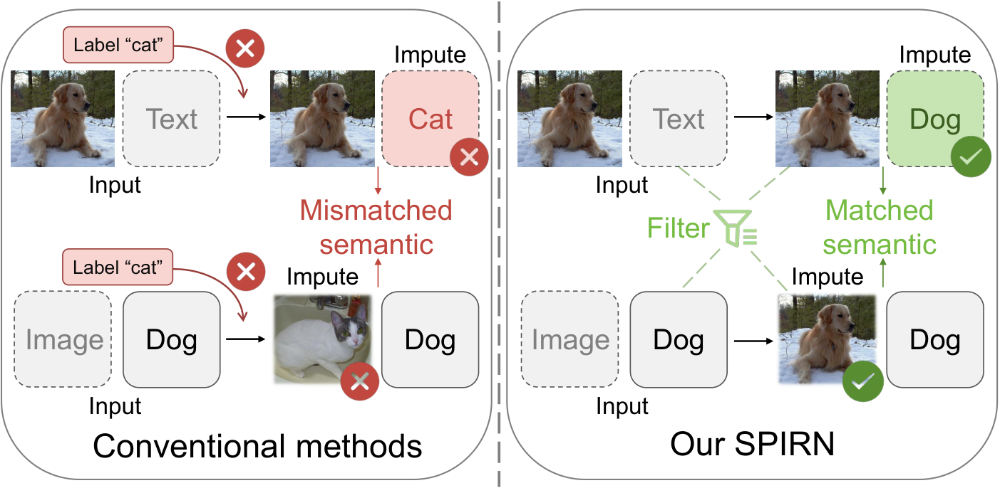
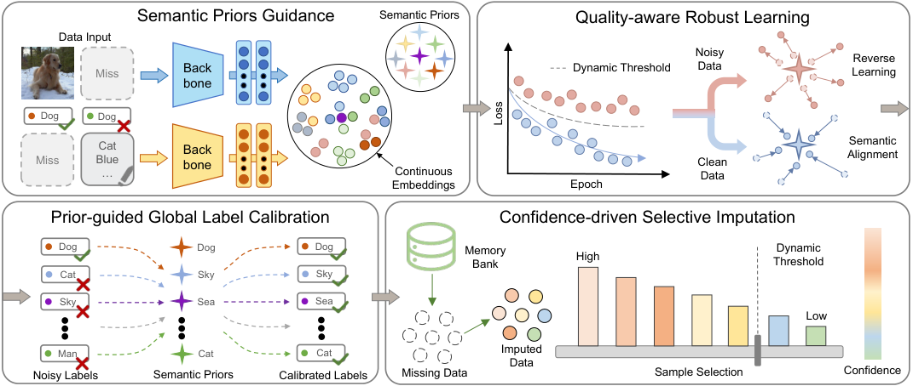
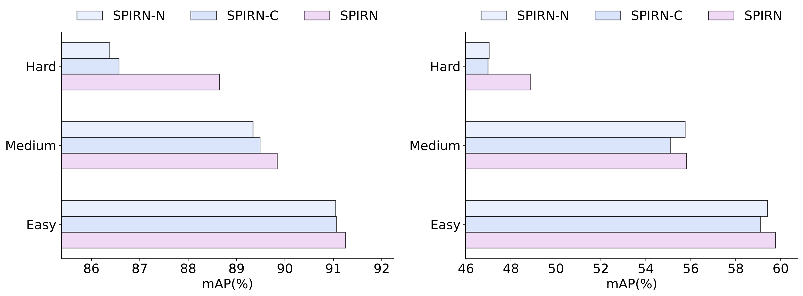

Contents · 9 sections
1What gap it fills2The overall pipeline3Why the reference vectors are fixed4How mislabeled samples are told apart5Correct the labels, then fill the missing modality6How well it works7Limitations as I see them8How a recommendation or search team could try it9VerdictSHARE
People working on multimodal retrieval should read this for the idea, but should not treat it as something ready to deploy. In cross-modal retrieval, such as searching images with text or text with images (here the goal is to retrieve content of the same category), training data often lacks one modality (some samples have only an image), and the category labels contain errors as well. Existing missing-modality methods all treat labels as the semantic reference: they use labels to cluster the embeddings of same-category samples, and also use labels to fill in the missing half, so when a label is wrong, both steps go wrong with it. The core idea of SPIRN (the method proposed in this paper) is to give each category a fixed semantic reference vector, with all reference vectors orthogonal to each other and never updated during training. The encoders pull samples toward the vector of their label, and picking clean samples, correcting labels and filling missing modalities (what gets filled is the other side's embedding, not a real image or text) all use this same set of vectors as the ruler. These vectors start with no category meaning; the meaning comes from the encoders pulling samples toward them according to labels. In the experiments, wrong labels are drawn uniformly across all categories. So when categories have similar numbers of samples, among samples carrying a given label, even when more than half are mislabeled, the samples that truly belong to that category still outnumber those from any other single category. Neural networks also usually learn such dominant shared patterns first and memorize wrong labels only later. So early in training the largest group around each vector is samples that truly belong to that category, and only then can it serve as a ruler (this is my reading of the paper's rationale; when category sizes differ greatly, or wrong labels concentrate between two or three similar categories, this condition may not hold). Being fixed only keeps the ruler itself from being dragged along by wrong labels. In the setting with the most missing data (only 20% of training samples have both image and text) and 60% of training samples having their labels randomly redrawn, its image-to-text mAP on XMediaNet is 49.2, while the best existing method reaches only 21.0. Yet on the Wikipedia and XMedia datasets, with little missing data and few wrong labels, it roughly ties the best existing method.
What gap it fills
First, the task. Each training sample should have an image, a piece of text and a category label. The model is two encoders, one turning images and one turning text into embeddings in the same space. This line of work does category-level retrieval: when you search with an image, the goal is to retrieve text of the same category, not only the one text paired with it. At retrieval time, following the usual practice for this kind of method, the query's embedding is compared directly with the other modality's embeddings and ranked by similarity.
Existing methods each solved half the problem along two lines. The first line handles "missing modalities": some samples have only an image and some only text, and these methods use image-text correspondences or neighboring samples to fill in the missing half. During training they treat the observed category labels as the semantic reference, using labels to pull same-category samples together and to guide the filling-in; they assume the labels are right. The second line handles "wrong labels": for example, it separates clean samples from mislabeled ones by how hard each sample is to learn, or by whether its cross-modal neighbors agree. These methods assume every sample has both image and text.
When both problems occur together, both lines break. Figure 1 of the paper draws an example: a photo of a dog is missing its text, and its label is wrongly "cat". The first line fills in by label, producing text about a cat; another sample that has only the text "Dog", also wrongly labeled "cat", is filled in with an image of a cat as well. The figure draws images and text for clarity; what SPIRN actually fills in is an embedding, as explained later. The second line has less to go on: the paper points out that once one modality is missing, the correspondence signal between image and text weakens, so mislabels are harder to catch. The gap the paper targets is this: it needs a reference that does not follow the wrong labels, used for picking samples, correcting labels and filling modalities alike.

Here is an illustrative scenario used throughout (all numbers are illustrative). A product catalog has 3 categories: dog food, cat food and bird seed. Sample A has image and text, labeled "dog food", correctly. Sample B also has image and text; it is actually cat food but labeled "dog food". Sample C has only a product image of dog food and no text. These three are just a few rows of a large training set, which also holds many correctly labeled dog food, cat food and bird seed samples.
| Sample | What it has | Observed label | True category |
|---|---|---|---|
| A | Image + text | Dog food | Dog food |
| B | Image + text | Dog food | Cat food |
| C | Image only | Dog food | Dog food |
The overall pipeline
SPIRN has four components. Figure 2 below draws all inputs together; in fact, warm-up uses only samples with both image and text, and single-modality samples enter training only in the third stage, after imputation. Training runs in three stages in order, with one non-training global relabeling step inserted between the second and third stages.

| Step | Which samples | What it does | Output |
|---|---|---|---|
| Warm-up (SPG) | Samples with both image and text | Pulls both the image and text embeddings toward the reference vector of the observed label | An initially aligned space |
| Noisy learning (QRL) | Samples with both image and text (the reverse-learning and contrastive terms are written over a sample's image and text sides, and the paper states the contrastive term uses samples with both) | Weights samples by loss (early in training, mislabeled samples have higher loss; why is explained later); applies reverse learning to those judged noisy, that is, randomly picks a category other than the observed label and pushes down the probability of the sample being classified as it (with many categories, the chance of picking the true one is small); adds image-text contrastive learning | Encoders less affected by wrong labels |
| Global relabeling (PGLC, done once between stages, no training) | All samples | Relabels each sample to the category of the most similar reference vector | Corrected labels |
| Selective imputation (CSI) | Samples with only an image or only text | Fills the missing modality from a memory bank and trains only on confident fills | A final model that can use single-modality samples |
The key division of labor: the reference vectors never move, while labels and filled-in embeddings may both be wrong, so the latter are always compared against the reference vectors. Next, the parts one by one, starting with why the references can serve as this ruler.
Why the reference vectors are fixed
The usual approach attaches a learnable classification layer after the encoders, with one category center per category, updated during training by the samples labeled as that category. The problem is that "belonging to that category" is decided by the label. In the scenario, if 40% of the samples labeled "dog food" are really cat food, the dog-food center is pulled toward cat food; once the center drifts, judging who is mislabeled by "how far from the center" stops working. Missing modalities leave fewer usable samples, so centers drift more easily.
SPIRN instead uses a fixed matrix W, whose row w_c is the reference vector of category c. The rows are mutually orthogonal. Orthogonality requires the embedding dimension to be at least the number of categories. W is not updated during training; a sample's category probabilities come from its similarity to each reference vector:
z_i is the sample's normalized image or text embedding, τ is a temperature, and C is the number of categories. Intuitively this is a classification layer whose weights are nailed down as mutually orthogonal vectors. The warm-up stage uses only samples with both image and text, computing a cross-entropy for the image and for the text, with the observed label as the target. The reference vectors carry no category meaning by themselves; the meaning comes from training: the encoders pull samples labeled c toward w_c. This can be understood through the early-learning phenomenon described in the next section: networks first learn the shared patterns of correctly labeled samples, so early in training the largest group around w_c is content that truly belongs to category c. A wrong label can still pull an individual sample toward the wrong reference through the encoders, which is exactly why the next step picks out noisy samples; but it cannot move the reference itself, so the reference does not drift as a whole just because one category has many mislabels. Being fixed only keeps the ruler itself still; whether samples get pulled off course as a whole by wrong labels depends on the early-learning phenomenon and the next step's selection; I think this is weakest when noise is very high.
How mislabeled samples are told apart
The noisy-learning stage relies on a known phenomenon: neural networks usually learn simple, clean patterns first and only later start memorizing wrong labels. So early in training, correctly labeled samples have low loss against their label's reference vector, and mislabeled ones have high loss. How many epochs warm-up and noisy learning each run is a preset hyperparameter. Reasoning from the early-learning phenomenon (this is my inference), separating samples by loss must happen before the network memorizes wrong labels, and if warm-up runs too long, mislabeled samples' loss is pushed down too and the two can no longer be told apart. In the scenario, A's image and text both look like dog food and sit close to the "dog food" vector; B is really cat food; under the uniform-noise setting, the many correctly labeled cat food samples have already gathered cat food patterns near the "cat food" vector, so B sits far from the "dog food" vector and has high loss.
In the noisy-learning stage the quality metric is written as one scalar ℓ_i per sample (a cross-entropy-style loss against the semantic references), from which one weight w_i is computed; in the reverse-learning formula each sample also has one "noisy" flag covering both its image and its text, so a sample's image and text are judged clean together or noisy together. In Quality-aware Robust Learning (QRL), the paper does not say how ℓ_i is formed from the image and text sides—whether as the sum, mean, or maximum of two per-modality cross-entropies, or some other construction. The warm-up total loss adds the image and text cross-entropies, and the third-stage per-sample loss likewise adds the alignment losses on the observed and filled-in sides, but those writings cannot be taken as the definition of ℓ_i. So this explainer can only establish that the unit of selection is the whole sample and that both sides share one weight and one flag. It cannot assert how ℓ_i is built, nor conclude that "one very high side must push the whole sample over the threshold." The hard part is setting the threshold; a fixed number does not suit different data or different training phases. SPIRN computes it per batch: take the smallest ℓ_i in the batch and multiply it by a hyperparameter η to get the threshold γ. The sample with the smallest ℓ_i is the most likely to be clean, and using it as the anchor makes the threshold move with the difficulty of this batch and with training progress. η sets the tolerance: η must be above 1, otherwise even the lowest-ℓ_i sample gets a weight near 0. At η = 2, every sample whose ℓ_i exceeds twice the batch minimum is judged noisy. Each sample's weight is max(0, 1 − ℓ_i/γ): the closer ℓ_i gets to the threshold, the smaller the weight, reaching 0 at the threshold. A hand calculation (illustrative): with η = 2 and a smallest batch ℓ_i of 0.3, the threshold is 0.6. A sample with ℓ_i 0.3 gets weight 0.5, one with 0.45 gets 0.25, and one with 0.9 exceeds the threshold, gets weight 0 and is judged noisy. Samples with weight above 0 keep moving toward their label's reference vector according to their weights.
Samples judged noisy are not simply discarded but get reverse learning: since the observed label is untrustworthy, a category is picked at random from the other categories, and the model is penalized for predicting that category. In the scenario, B's observed label is "dog food"; if "bird seed" is drawn, the probability of B being classified as bird seed is pushed down. The paper's stated reason is to keep potentially useful structural information in these samples; removing it in the ablation costs only 0.15 to 0.25, so its effect is limited. My reading is that with many categories, a randomly drawn category is most likely not the true one, so the information "not this category" is very likely right; the illustrative scenario has only 3 categories, so there is a one-in-two chance of drawing the true category, and this step is not very reliable there.
This stage also adds image-text contrastive learning: a sample's own image and text are pulled together, and the other samples in the batch are pushed apart whether or not they share its category. This term ignores the weights, and samples judged noisy in the batch take part too, because it uses only whether an image and a text are paired, not the label. The paper's stated reason is to narrow the gap between the image and text representations: with only reference vectors, images and texts each move toward the same point, but there is no direct constraint between a sample's own image and text. It does not point in exactly the same direction as the loss aligning to the references, and the balance between the two is set by the hyperparameter β.
Correct the labels, then fill the missing modality
Once the encoders are trained, the paper stops trusting the original labels. For a sample with both image and text, the image and text embeddings are added and normalized; a single-modality sample uses the one embedding it has. Whichever reference vector it is most similar to becomes its new label. In the scenario, B's embedding is most similar to the "cat food" vector, so its label changes from dog food to cat food. This step is done for all samples, so an image-only sample like C also gets a corrected label. Relabeling accuracy varies with the data. On XMedia, with half the training samples missing one modality and 60% of labels scrambled, 95.9% of the corrected labels are right. But on XMediaNet with only 20% of samples having both image and text, when 20% of samples have their labels redrawn, only 80.6% are right after relabeling, about the same as the roughly 80% correct original labels; when 80% are redrawn, it is 68.8%.
Next comes filling the missing modality. The memory bank stores the trained image and text embeddings of samples that have both. Take the image-only C: its image embedding is used to find the K most similar images in the memory bank; a softmax over those K neighbors' image similarities, with temperature τ, produces weights a_{i,j}; the corresponding text embeddings are then summed with those weights and normalized, and the result is used as C's filled-in text embedding. What gets filled in is not real text but a vector.
The filled-in vector may be unreliable, for example when some of C's neighbors actually belong to another category, or their embeddings were pulled off course by wrong labels. SPIRN scores it with the reference vectors: the more similar the filled-in text embedding is to the reference vector of C's corrected category, the higher the confidence; the uncertainty s is 1 minus this confidence (the similarity divided by the temperature τ and passed through a sigmoid to become a number between 0 and 1). The weight is max(0, 1 − s/γ_m), where γ_m is the threshold. A hand calculation (illustrative): at γ_m = 0.3, a fill with s = 0.1 gets weight about 0.67 and one with s = 0.4 gets weight 0 and does not enter third-stage training; once the threshold rises to 0.5, the fill with s = 0.4 gets weight 0.2 and starts to enter training. The threshold rises during training, which means using only the most confident fills first and gradually admitting less confident ones; no increase schedule is given for that threshold. This confidence measures whether the fill agrees with the corrected label, not whether the fill itself is right; if the relabeling is wrong, both can be wrong together. What the paper does state for the third stage is this. Single-modality samples with weight above 0 enter training. For each such sample, the observed-side embedding and the filled-in other side are both pulled toward the reference vector of the corrected category, with a pairwise contrastive term between the two. The sample weight multiplies these three terms. The third-stage total loss is computed only over the single-modality sample sets. The filled-in vector comes from a weighted aggregation of memory-bank neighbors. In Confidence-driven Selective Imputation (CSI), the paper does not say how these losses send gradients to trainable parameters, nor whether the fill is recomputed every step, whether gradients through a_{i,j} are cut off, whether the memory bank is refreshed as the encoders update, or what form the pairwise contrastive term takes. Hoot says

Illustrative: the x-axis is the filled-in vector's uncertainty s (1 minus its confidence against the corrected category's reference vector), the y-axis is that fill's training weight max(0, 1 − s/γ_m). Solid line γ_m = 0.3, dashed γ_m = 0.5. As the threshold increases during training, the curve opens to the right: at first only the most confident fills get weight, and less confident ones come in gradually. Source: paper CSI Eqs. (14)(15): s_i = 1 − σ(ẑ·w_ĉ/τ), ŵ_i = max(0, 1 − s_i/γ_m), γ_m increases during training; the γ_m values are illustrative
How well it works
The paper compares against 11 existing methods on four image-text datasets, Wikipedia, XMedia, INRIA-Websearch and XMediaNet, varying two factors on each. Missing modalities come in three levels: easy has 80% of training samples with both image and text, and image-only and text-only at 10% each; medium has half complete and each single modality at a quarter; hard has only 20% complete and each single modality at 40%.
Label noise is added only to the training set: a share of training samples is chosen at random and each label is redrawn uniformly over all categories, with the chosen share ranging from 20% to 80%. Test labels are clean, so the scores show whether the model was misled by wrong labels.
The baselines in the table fall into two groups. EGICH (a missing-modality method) and GNN4CMR (a missing-modality method) rely on clean labels; RONO (a wrong-label method) and RSHNL (a wrong-label method) are grouped by the paper as robust to wrong labels but poor at using single-modality samples. How methods that originally assume complete image-text pairs handle single-modality samples under missing-modality settings is left unspecified in the experimental write-up. The numbers below are recorded as reported; this explainer cannot conclude that every method was compared under the same effective training volume. The table gives image-to-text (I2T) and text-to-image (T2I) mAP (%), listing for each group the strongest existing method in that setting plus one representative of the other line.
| Dataset and setting | Method | I2T | T2I |
|---|---|---|---|
| XMediaNet, hard, 60% noise | GNN4CMR | 21.0 | 23.3 |
| RSHNL | 13.6 | 14.9 | |
| SPIRN | 49.2 | 48.5 | |
| XMediaNet, medium, 60% noise | EGICH | 37.3 | 38.7 |
| RSHNL | 35.6 | 37.1 | |
| SPIRN | 55.8 | 55.8 | |
| Wikipedia, medium, 60% noise | RONO | 36.1 | 34.9 |
| EGICH | 22.3 | 21.4 | |
| SPIRN | 45.6 | 41.4 | |
| Wikipedia, easy, 20% noise | RONO | 49.4 | 45.2 |
| EGICH | 45.6 | 40.1 | |
| SPIRN | 49.7 | 45.1 |
Each group of numbers shows one thing. EGICH on Wikipedia medium drops from 45.4 to 22.3 in image-to-text as noise rises from 20% to 60%, which shows that a method that only handles missing modalities and uses labels as its reference collapses once labels get messy. RSHNL on XMediaNet at 60% noise drops from 35.6 to 13.6 as missing modalities go from medium to hard; the paper's interpretation is that such methods are robust to wrong labels but make poor use of samples with a missing modality. SPIRN drops far less along the same two directions: on Wikipedia medium, as noise rises from 20% to 60%, it goes from 47.4 to 45.6; on XMediaNet, as missing modalities go from medium to hard, it goes from 55.8 to 49.2. The last group shows that on Wikipedia, with little missing data and few wrong labels, it has almost no advantage, and its text-to-image score is even 0.1 lower; in the same easy, 20%-noise setting, though, it still leads by 5 to 7.5 points on INRIA-Websearch and XMediaNet.
The ablation is run at medium with 60% noise, each time removing one loss from the noisy-learning stage while keeping the reference vectors, warm-up, relabeling and imputation. Removing the weighted alignment to the reference vectors drops XMediaNet mean mAP from 55.81 to 16.15 and XMedia from 89.84 to 84.12, which shows this step is indispensable. The paper's explanation is that without this supervision, consistency between samples and references cannot be measured reliably, so clean and noisy samples are hard to separate. This is the paper's explanation of the drop; the ablation itself only shows the overall drop. Removing image-text contrastive learning lowers XMedia to 82.86 but XMediaNet only to 54.99, so its effect differs a lot between datasets. Removing reverse learning matters little: both datasets differ by only 0.15 to 0.25.

For the imputation step, look at Figure 5. Using every filled-in vector without filtering can be worse than not filling at all: on XMediaNet medium, the bar for imputing everything is shorter than the bar for no imputation. With confidence filtering, the hard setting comes out clearly above both; but at easy and medium, the gap to no imputation is small.
Limitations as I see them
First, the noise is uniformly random. The experiments redraw chosen samples' labels uniformly over all categories, whereas real-world mislabels tend to cluster between similar categories, such as cat food and dog food swapped. Cat food and dog food product images already look alike, so a cat-food sample mislabeled as dog food has an embedding not far from the "dog food" reference vector, its loss is not necessarily high, and loss-based clean-sample selection becomes much harder. B's high loss in the scenario assumes the uniform-noise case; with real cat food and dog food swapping labels, it may not hold. The experiments use only uniform noise.
Second, on datasets where scores are already high, the advantage under mild corruption is small. On Wikipedia easy with 20% noise, image-to-text is only 0.3 above RONO, and text-to-image is 0.1 lower; in the same setting on XMedia, image-to-text ties the best existing method (both 90.6) and text-to-image is only 0.9 higher. A team whose data is only mildly incomplete and mildly mislabeled should compare on its own data before adopting this three-stage training.
Third, the ablation cannot answer the most important question. It only shows that the loss aligning to the references is indispensable; it does not compare fixed references with learnable category centers, nor remove the loss-based weighting on its own. Removing reverse learning costs only 0.25, and selective imputation leads clearly only in the hard setting. My guess is that the fixed references and loss-based weighting carry the results, but that is an inference, and the first two steps of the trial plan below are meant to test it.
How a recommendation or search team could try it
The fitting scenario is a multimodal collection retrieved by category, such as a product catalog where some products have only images and some only titles, with categories filled in by sellers and many of them wrong.
- First, replace the classification head of an existing image-text model with fixed orthogonal reference vectors. Train only on samples with both image and text, and compare against a version with learnable category centers, using the same data and the same number of training epochs. Initialize the learnable version with the same orthogonal matrix, so both versions start at the same point and differ only in whether the head moves during training. Measure category-level retrieval mAP on a test set whose categories were checked by hand. Then, following the paper's uniform-redraw protocol, choose a larger share of training samples and redraw each chosen label uniformly over all categories (the chosen share is not the same as the actual wrong-label rate, because a redraw can land on the original class), and see whether the fixed-reference version has higher mAP and drops less. This step changes only whether the head is fixed, so what it shows is whether being fixed holds up better under wrong labels, not the effect of orthogonal initialization.
- Then add weighting with a threshold set by the batch's smallest loss, spot-check how many of the samples judged noisy really are mislabeled, and compare that with the mislabel rate of the whole dataset. If the former is clearly higher, this sample-picking rule holds on your own data.
- Relabel all samples with the reference vectors and manually check the labels before and after relabeling on the same sampled batch. If the relabeled accuracy is not higher than that of the original labels, do not go on to imputation.
- Finally, run memory-bank imputation for single-modality products and compare three groups: no imputation, imputing everything, and imputing by confidence. Imputing by confidence must beat no imputation to be worth shipping; if imputing everything is worse than none, filtering is necessary.
Verdict
The most useful takeaway: when labels may be wrong and data may be missing, first find a reference that does not move with them, then use it to judge the other samples. This reference is reliable only if the right patterns are learned first early in training, and the higher the noise, the weaker that premise. SPIRN uses a set of fixed orthogonal vectors as that reference, and the effect is clear on heavily corrupted academic benchmarks; under mild corruption its advantage is small on some datasets, and real mislabeling patterns have not been tested.
| Dimension | Assessment |
|---|---|
| Problem importance | Medium-high. Missing modalities and wrong labels often occur together in real multimodal collections |
| Method novelty | Medium. Picking clean samples by loss and filling missing modalities from neighbors both appear in related work; the novelty is tying them together with a fixed reference |
| Experimental evidence | Medium. Four datasets and 11 baselines, but the noise is synthetic uniform noise and only category-level retrieval is tested |
| Engineering cost | Low to medium. The changes are in training: three-stage training plus a nearest-neighbor lookup in a memory bank, with no new model beyond the two encoders |
| Worth trying | The first two steps, yes. The fixed reference and loss-based weighting are small changes and easy to verify |
| Where it fits | Category-level retrieval over multimodal collections with poor category labels and some samples missing images or text |
How did this read for you?
Hoot made a note. Thanks for the feedback.
One tap, no sign-in; tap again to undo. Only anonymous counts are kept, never who you are.
Related papersMore from Paper Daily
 Retrieval · 2026-11-03Better Retrievers, Worse Labels: How Incomplete Relevance Judgments Distort Abstention Evaluation in Conversational RAGConversational RAG benchmarks often take a shortcut when deciding whether retrieved context is enough to answer: if none of the judged relevant documents were retrieved, the turn counts as unanswerable, and refusing is scored as correct. Re-running RECOR with four retrievers, the authors find the shortcut gets worse as the retriever gets better: among contexts with no judged document, the share t…
Retrieval · 2026-11-03Better Retrievers, Worse Labels: How Incomplete Relevance Judgments Distort Abstention Evaluation in Conversational RAGConversational RAG benchmarks often take a shortcut when deciding whether retrieved context is enough to answer: if none of the judged relevant documents were retrieved, the turn counts as unanswerable, and refusing is scored as correct. Re-running RECOR with four retrievers, the authors find the shortcut gets worse as the retriever gets better: among contexts with no judged document, the share t… Retrieval · 2026-11-03How BERT-based Cross-Encoders Model Relevance in Information Retrieval?BERT-based cross-encoders are among the most accurate rerankers, yet how they judge relevance inside has never been clear. The paper traces how information flows in three models of different sizes across several in-domain and out-of-domain datasets, and finds the three go through the same stages. Early and middle layers contextualize tokens while dedicated attention heads look for literal matches…
Retrieval · 2026-11-03How BERT-based Cross-Encoders Model Relevance in Information Retrieval?BERT-based cross-encoders are among the most accurate rerankers, yet how they judge relevance inside has never been clear. The paper traces how information flows in three models of different sizes across several in-domain and out-of-domain datasets, and finds the three go through the same stages. Early and middle layers contextualize tokens while dedicated attention heads look for literal matches… Retrieval · 2026-11-02xPRT: Cross-Passage Retrieval PretrainingWhich passages of the same web page talk about related things is, by itself, enough to train a retriever. xPRT first takes passages whose vectors are close enough to the page's mean vector as anchor passages, then, by vector similarity and word overlap, finds for each anchor the four most related passages of the same document. It then trains the embedding: the anchor must pick out its most relate…
Retrieval · 2026-11-02xPRT: Cross-Passage Retrieval PretrainingWhich passages of the same web page talk about related things is, by itself, enough to train a retriever. xPRT first takes passages whose vectors are close enough to the page's mean vector as anchor passages, then, by vector similarity and word overlap, finds for each anchor the four most related passages of the same document. It then trains the embedding: the anchor must pick out its most relate…
Discussion
Add experiment details, reproduction notes or a different take. Requires a GitHub sign-in.
Loading the discussion…